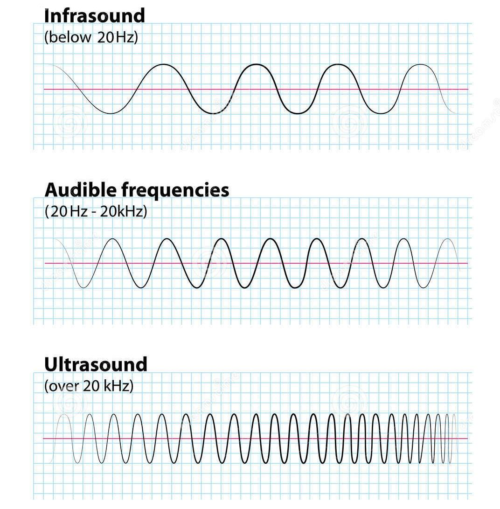
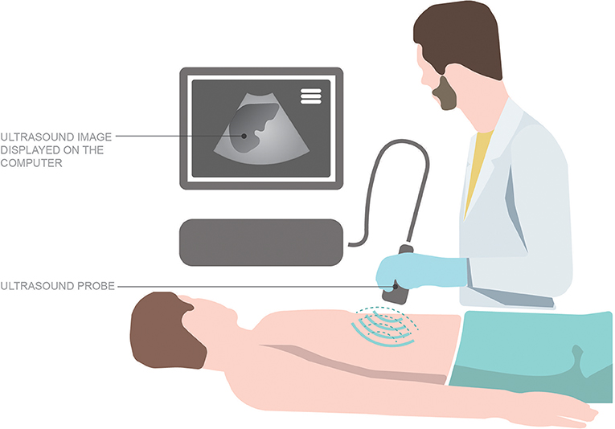
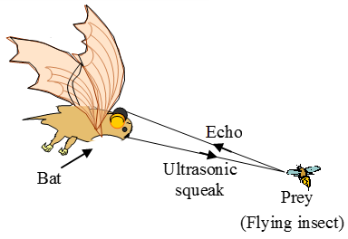

There are two types of sounds: Audible sounds and inaudible sounds.
Inaudible sounds :

Not all sounds produced by vibrating objects can be heard by us. For example, when a simple pendulum vibrates, sound is produced by it is not heard by us.
The sounds which are not heard by us are called inaudible sounds (since they are not audible to us).
If an object has less frequency of vibration than 20 Hertz or more frequency of vibration than 20,000 Hertz, this type of sound will be recognized as inaudile sound
Sounds less than 20 Hertz or called infrasonic sounds (or just infrasonics).
Sounds with higher frequency than 20,000 Hertz are called ultrasonic sounds ( or just ultransonics) or ultrasound.
Audible sounds :
Sounds which are heard by us are called audible sounds (since they are audible to us).
Observing the 3rd point of above paragraph of inaudible sounds, we can say that sounds between 20 - 20,000 Hertz are called audible sounds.
Uses of Ultrasound :

It is used as a diagnostic tool in medical science to investigate the inside of human body.
It is used to study the growth of foetus (developing baby inside mother's womb).
It is used in the treatment of muscular pain and a disease called arthritis (imflammation of joints).
It is used to measure the depth of sea (or ocean).
Facts :

Human beings can neither produce ultrasonic sounds nor hear them.
Some animals like bats can both produce and hear ultrasonic sounds.
Other animals like dog, monkeys and leopards can also hear ultransonic sounds.
Crime-branch police uses high frequency whistles to give commands to their dogs.
Speed of infrasonics and ultrasonics is same as audible sounds.